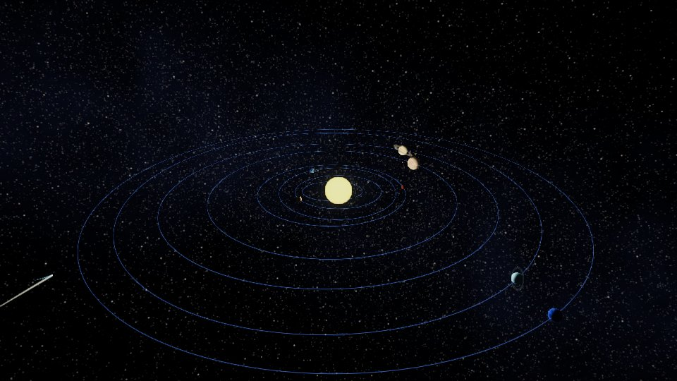
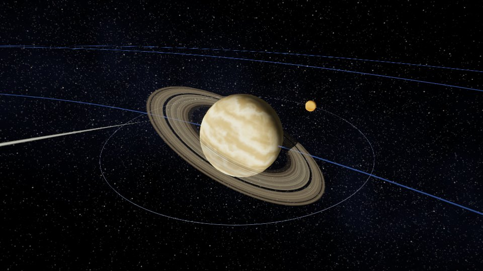
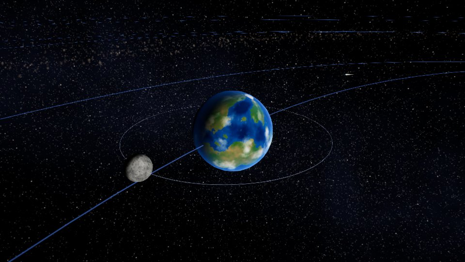
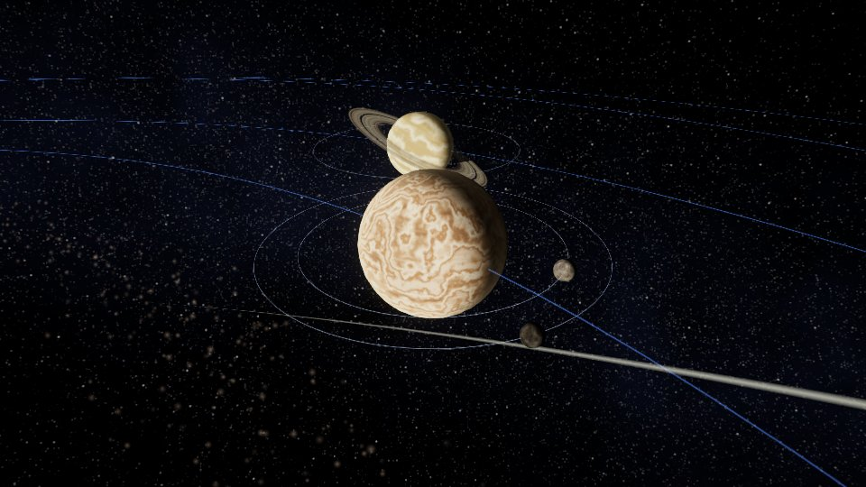

Tunable Solar System

▶ Play in your browserWebGL, about 40 MB, best on desktop. Click into the frame before using the keys.



The Project
A tunable solar system I built for the game development session I gave at NASA Space Apps Shebeen El-Kom, to show beginners the ideas that changed how I build systems. Everything on screen is driven by data assets, and every value can be tuned while it runs. Sizes and distances are compressed so everything fits on screen; the timings and angles are real: periods, eccentricities, inclinations, axial tilts, starting positions on 1 January 2000, Venus's and Uranus's backwards spin and Triton's backwards orbit.
Data Outside the Code
Each body is a
A body's position is a function of time: its parent's position plus its own orbit at that moment. Nothing is remembered between frames, so nothing drifts, the update order never matters, and the speed can change instantly.
BodyData ScriptableObject: size, orbit, spin, look. One CelestialBody script reads it every frame, so a change in the Inspector shows up instantly. There's no Planet or Moon class: a moon is a CelestialBody that orbits a planet instead of the Sun, and rings are an add-on component with their own data asset.A body's position is a function of time: its parent's position plus its own orbit at that moment. Nothing is remembered between frames, so nothing drifts, the update order never matters, and the speed can change instantly.
Orbits as Strategies
OrbitStrategy answers one question, where is this body at this time?, and each subclass answers it differently. CircularOrbit is a circle at constant speed; EllipticalOrbit solves Kepler's equation, M = E − e·sin E, with a few steps of Newton's method, so planets speed up near the Sun. The base class handles what every orbit shares (time to angle, start position, inclination, retrograde motion), so a new orbit is a few lines and an asset, and the orbit line redraws itself from the same strategy.
Built on Emplacement
The camera runs on Emplacement's typed
StateMachine<T> (Overview and Follow, gliding between targets at a frame-rate-independent rate). Comets come from its ObjectPool<T>, are placed through ISpawnable, and find the Sun through a TransformReference asset. Each comet has two tails: dust left along its path, and an ion tail that always points away from the Sun, as the solar wind blows real ones.
The Look
No Unity lights: the Sun's position is a global shader value and each surface lights itself, with a soft day/night edge and an atmosphere rim. The Sun is HDR so bloom makes it glow, Saturn's rings take the planet's shadow, the sky is a procedural starfield with a Milky Way band, and every planet texture is painted by code with noise, so nothing was downloaded.